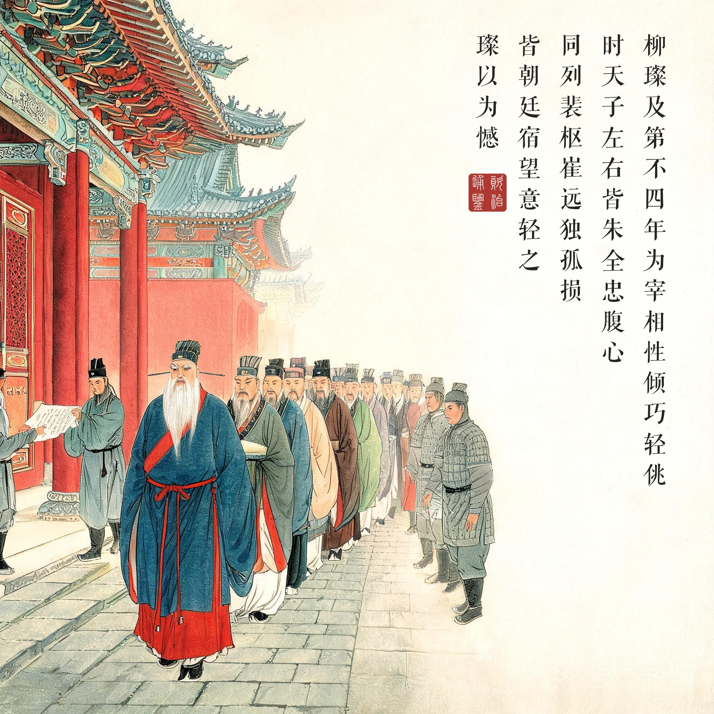
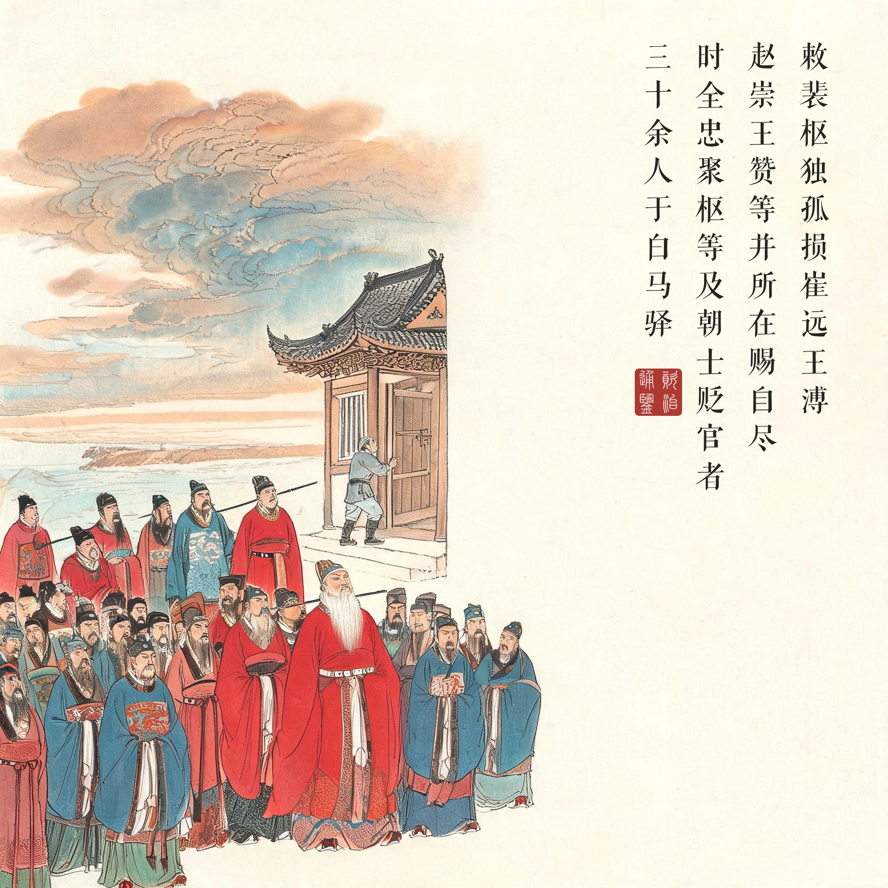
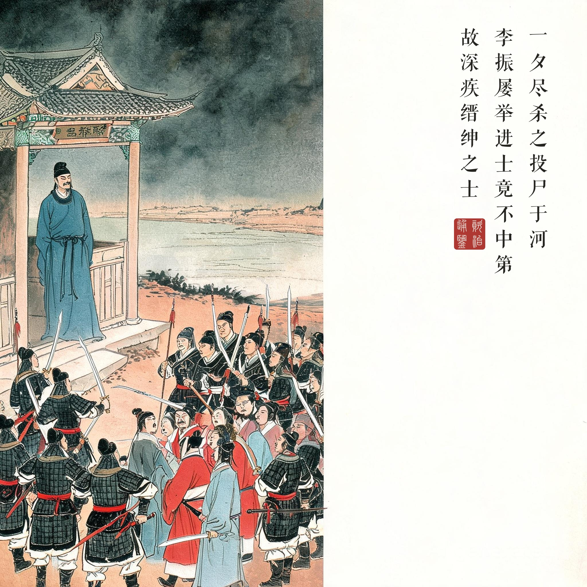
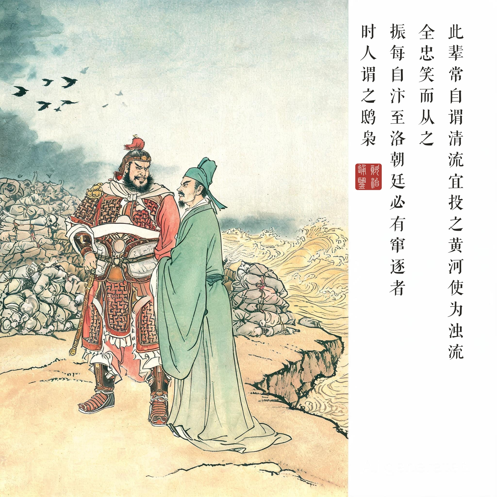

《资治通鉴 · 卷第二百六十五 · 唐纪八十一》昭宗圣穆景文孝皇帝下之下天祐二年（公元 905 年）
（据 daizhigev20《资治通鉴》底本节录。前情：柳璨倾陷朝士，天祐二年二月再贬裴枢、独孤损、崔远等；六月，敕所在赐自尽）
初，柳璨及第，不四年为宰相，性倾巧轻佻。时天子左右皆朱全忠腹心，璨曲意事之。同列裴枢、崔远、独孤损皆朝廷宿望，意轻之，璨以为憾。……敕裴枢、独孤损、崔远、陆扆、王溥、赵崇、王赞等并所在赐自尽。时全忠聚枢等及朝士贬官者三十馀人于白马驿，一夕尽杀之，投尸于河。初，李振屡举进士，竟不中第，故深疾缙绅之士，言于全忠曰：“此辈常自谓清流，宜投之黄河，使为浊流！”全忠笑而从之。振每自汴至洛，朝廷必有窜逐者，时人谓之鸱枭。
当初，柳璨进士及第，不到四年做到宰相，性情倾轧巧诈、轻佻浮薄。当时皇帝身边都是朱全忠的心腹，柳璨曲意侍奉他们。同僚裴枢、崔远、独孤损都是朝廷素负重望的老臣，心里轻视他，柳璨引为恨事。……皇帝下敕：裴枢、独孤损、崔远、陆扆、王溥、赵崇、王赞等人，均在所在地赐自尽。当时朱全忠把裴枢等人以及被贬的朝官三十多人聚集在白马驿，一个晚上全部杀掉，尸体投入黄河。当初，李振多次应考进士，始终没能及第，所以对士大夫阶层恨之入骨，对朱全忠说：“这些人常自命为清流，应该扔进黄河，让他们变成浊流！”朱全忠笑着听从了。李振每次从汴州到洛阳来，朝廷必定有人被贬逐，当时人叫他“鸱枭”。
一场替完成杀人的仪式。白马驿之祸的程序表面看是“赐自尽”——王朝最体面的死刑，实际是三十多人被集中到黄河边一站杀尽。把敕死之臣聚到一起再动手，说明这不是司法，是清场：朱全忠要的是“朝士”这个阶层在物理上消失，为几个月后的禅让抹平最后一点阻力。《通鉴》记这一段不用形容词，只给三个数字（三十馀人、一夕、投尸于河）和一句对话——史笔越冷静，事件越冷。
恨的考古学。李振那句“宜投之黄河，使为浊流”是全回最该被反复审视的话。一个考不上进士的读书人，把三十年落第的屈辱置换成对整个清流阶层的灭杀欲——他不恨某个人，他恨的是那套把他筛出局的身份系统。而最恐怖的是他的方案：不销毁系统、不改写系统，只用物理方式把系统里的人换掉（他自己后来果然以梁朝高官重返洛阳）。读画看第三幕：李振立在驿门阴影里冷眼旁观——杀人不需要他动手，他只需要说那句话。语言的暴力先于刀的暴力。
“笑而从之”与“鸱枭”。朱全忠的笑是本回第二个恐怖点：他不是被说服的，他是被取悦的。清流/浊流的俏皮话让一场屠杀变得有趣——暴政最稳定的形态从来不是狂怒，是这种轻快的默许。时人给李振起“鸱枭”的外号（不孝的恶鸟、食母之禽），是民间对这场灾祸最后的修辞抵抗。白马驿之后不过两年，朱全忠受禅建梁——二百八十九年的唐朝（含武周）落幕，五代十国的乱局开场。回望第一回三家分晋（礼崩则国倾），白马驿是同一条律令在帝国黄昏的最后一次执行：当一个政权开始批量物理清除自己的士人，它就不再是政权，只是等待改名的军队。